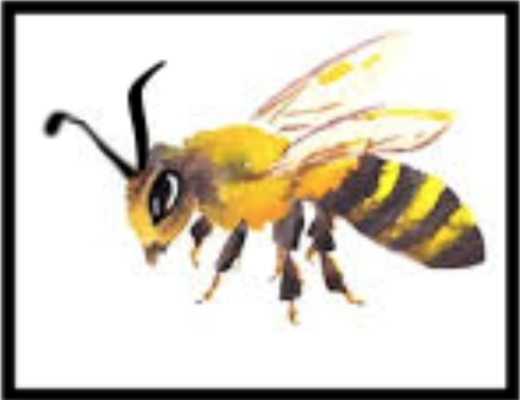

the Bee Lucks Be..♥ is an innovative slow news site which publishes stories centred around the UK's 15 National Parks.
Currently, we are a team of just two: I am Editor-In-Chief and in charge of web design, data analysis and collection, interviews & writing for this first edition. I am publishing this website as my Dissertation for my MSc in Computational & Data Journalism at Cardiff University. My partner, Sochi Ezeemo, is a Master's student in business at South Wales University & has provided advice on the promotion & outreach side. He was also kind enough to drive me around in a rental van during a week-long research trip to many of the UK's parks which provided much of the data & research for this first edition. (I don't drive. Never even been liscensed to. Personal reasons.)
Sochi also provided van-side journo assistance with his eye for photography & by recording interviews.
I want to thank my tutors, Glyn Mottershead from JOMEC & Martin Chorley from COMPSci, for supporting my learning process this year as I've become a more confident journalist & skilled programmer. My family and friends back home, too, have been amazingly encouraging. I'd particularly like to thank my Dad, who supported my UK adventure financially as well as in all other ways. And I'd like to specifically mention my Mom as well, the ultimate travel buddy who came to visit me halfway through the taught portion of this Master's & took me on a preliminary research trip around the island.
Allie and Kati: you know what you've done. I thank you for it.
I dedicate this project to Bear. To Christopher & Matthew Holstedt, to all my sisters on this wee planet & to my two stellar parents: I couldn't have done any of this without you. For real. To my future audience: thank you for reading, thank you for listening.
..♥ B. A Note from Our Spectacular Volunteer Photographer: Thanks Bec for including me in your dissertation research trip. I can appreciate now the magnitude of the role of an investigative
computational & data journalist. I look forward to a time when we have a budget that allows me to build a photography team--and maybe someday actually get a paycheck too!
A Note from Our Spectacular Volunteer Photographer: Thanks Bec for including me in your dissertation research trip. I can appreciate now the magnitude of the role of an investigative
computational & data journalist. I look forward to a time when we have a budget that allows me to build a photography team--and maybe someday actually get a paycheck too!

..♥ S.